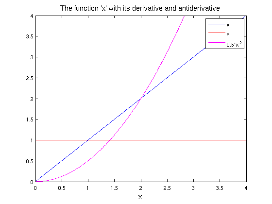
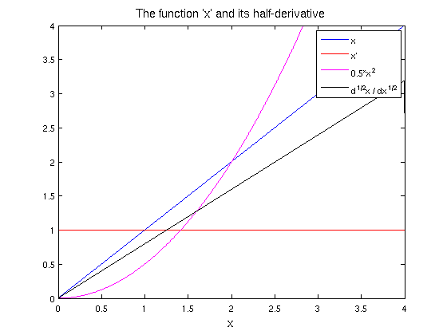
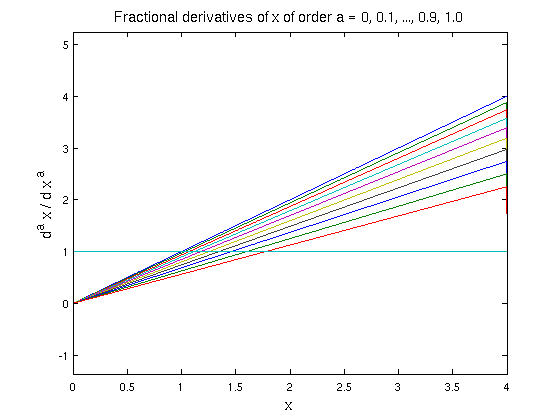
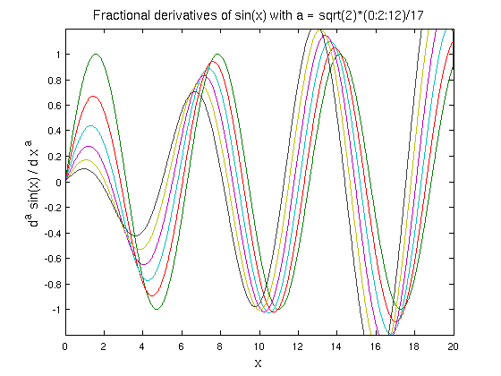
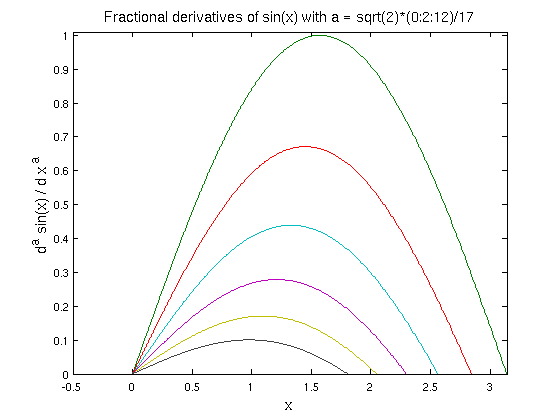
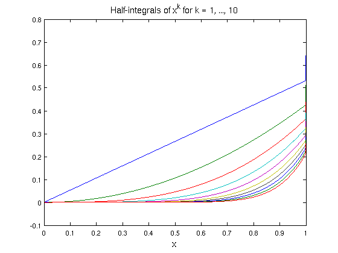
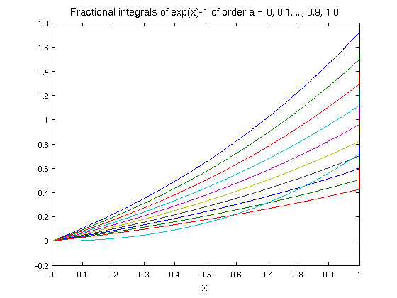

Fractional calculus in Chebfun
Nick Hale, October 2010
Contents
(Chebfun example integro/FracCalc.m)
We're all familiar with the standard definitions of differentiation and integration we learnt in high-school and at undergraduate level. For example, here is the function x on the interval [0 4] along with its derivative (the constant function, 1) and antiderivative (x^2).
x = chebfun('x',[0 4]); LW = 'LineWidth'; lw = 1.2; FS = 'FontSize'; fs = 14; plot(x,'b',diff(x),'r',cumsum(x),'m',LW,lw) legend('x','x''','0.5*x^2'), axis([0 4 0 4]), xlabel('x',FS,fs) title('The function ''x'' with its derivative and antiderivative',FS,fs)
Half-derivative
A natural question one might ask is whether there exists, say, a 'half-derivative' operator H, such that H^2(f) = df(x)/dx.
It turns out that through a generalisation of the Cauchy formula for repeated integration we can define precisely such an operator as a "Riemann-Liouville derivative" [1].
We omit here any rigorous definition of these operators, but instead demonstrate their behaviour when applied to some simple functions f, as well as Chebfun's ability to compute them.
Continuing where we left off above, we might ask what is the half-derivative of the function f(x) = x. In Chebfun this is easily computed via
xp05 = diff(x, 0.5); hold on, plot(xp05,'k',LW,lw), axis([0 4 0 4]) legend('x','x''','0.5*x^2','d^{1/2}x / dx^{1/2}'); xlabel('x',FS,fs); title('The function ''x'' and its half-derivative',FS,fs)
Notice here that the second argument passed to diff, which for standard calculus is a positive integer specifying the number of times to differentiate the chebfun, indicates that we wish to compute the half-derivative of x.
The plot of this half-derivative may look familiar, and in fact one can show that the half derivative of x is precisely 2*sqrt(x/pi), which we can verify:
f = chebfun(@(x) 2*sqrt(x/pi), 'exps', [0.5,0], [0 4]);
norm( f - xp05 , inf)
ans =
8.881784197001252e-16
Fractional differentiation
The Riemann-Liouville derivative definition above applies not only to half-powers, but to d^a/dx^a for any a > 0.
Below we demonstrate the (a)th derivative of x for a = 1/10,2/10,...,1.
close u = x; for alpha = 0.1:.1:1 u = [ u diff(u(:,1),alpha) ]; plot(u,LW,lw), drawnow end title('Fractional derivatives of x of order a = 0, 0.1, ..., 0.9, 1.0',FS,fs) xlabel('x',FS,fs); ylabel('d^a x / d x ^a',FS,fs)
Of course, these generalised derivatives can be applied to more complicated functions than simply the independent variable 'x'. Here we demonstrate the behaviour of varying irrational derrivatives of the trigonometric function sin(x).
close u = chebfun('sin(x)',[0 20]); for alpha = sqrt(2)*(0:2:10)/17 u = [ u diff(u(:,1),alpha) ]; plot(u,LW,lw), ylim(1.2*[-1 1]), drawnow, end title('Fractional derivatives of sin(x) with a = sqrt(2)*(0:2:12)/17',FS,fs) xlabel('x',FS,fs); ylabel('d^a sin(x) / d x ^a',FS,fs)
Far away from the left-hand boundary these derivatives are essentially shifts of x -> x + a*pi/2 (which is consistent with the case of a being an integer), but near x = 0 the boundary effects are more interesting.
axis([-0.5 pi 0.0 1.01])
Fractional integration
The definition of the Riemann-Liouville derivative can also to extended fractional integration (in fact it is sometimes refered to as the Riemann-Liouville "differintegral" [2]). Chebfun can also handle these types of operators, here extending the definition of cumsum to allow non-integer degree.
close x = chebfun('x',[0 1]); u = []; for k = 1:10; u = [ u cumsum(x.^k,0.5)]; plot(u,LW,lw), drawnow, hold on end title('Half-integrals of x^k for k = 1, ..., 10',FS,fs) xlabel('x',FS,fs);
Here's another example:
close u = chebfun('exp(x)-1',[0 1]); for alpha = 0.1:.1:1 u = [ u cumsum(u(:,1),alpha) ]; plot(u,LW,lw), drawnow end title('Fractional integrals of exp(x)-1 of order a = 0, 0.1, ..., 0.9, 1.0',FS,fs) xlabel('x',FS,fs);
Fractional differential equations
Unfortunately there is not yet any functionality for fractional calculus operators in the chebop system.
References
[1] Lizorkin, P.I. (2001),"Fractional integration and differentiation", http://eom.springer.de/f/f041230.htm
[2] http://en.wikipedia.org/wiki/Riemann-Liouville_differintegral